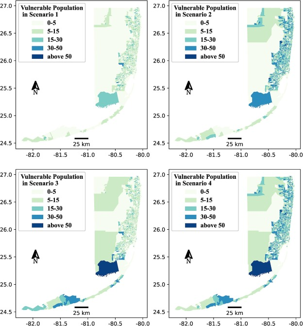

Land Use and Transport Planning
Connecting Travel Behavior, Climate Risk, and Transport Adaptation
My transport research examines how land use, daily activities, and individual travel decisions shape the impacts of climate hazards on mobility. I combine activity-based travel demand modeling, agent-based simulation, and spatial analysis to connect disruption on transport networks with its consequences for people. My focus is on understanding how changing development patterns and climate risks affect travel demand, accessibility, and the options available for adaptation.
Key Research Questions
- How do flooding and compound hazards disrupt daily mobility, and how do their effects vary across people and places?
- How can land-use and transport planning improve network resilience and access to activities under alternative socioeconomic and climate scenarios?
Flood Disruption and Evacuation Modeling
My published work in Transportation evaluates the impacts of coastal flooding on the Miami-Dade County transport system using an activity-based travel demand model. A related study in Travel Behaviour and Society models evacuation activities during Hurricane Irma in Southeast Florida, examining travel under compound hazards. These studies connect hazard conditions with individual activities and travel decisions, providing a basis for assessing disruption beyond damage to infrastructure alone.
At the University of Twente, my work on the PARATUS project extended this interest to the indirect impacts of compound and cascading hazards on transport systems. I developed approaches using open data and impact chains, and contributed to a web-based stakeholder support tool for systemic disaster risk assessment.
Current Work: From National Scenarios to Daily Mobility
At Cambridge, I am developing an integrated land use and transport simulation framework within the DARe project, funded by UKRI and the Department for Transport. My current work links alternative national socioeconomic scenarios to local daily travel behaviors for agent-based transport simulation using MATSim.
This framework is designed for application to cities across the UK and can be adapted to case studies elsewhere where suitable travel survey data is available. It connects socioeconomic scenarios with local travel behavior and network dynamics, providing a basis for assessing mobility and climate-hazard exposure in different urban contexts.
Research Directions: Evaluating Adaptation Benefits
I aim to use this framework to compare how development patterns and transport adaptation measures affect mobility under changing climate conditions, with attention to differences in exposure and access across communities. My earlier work on life-cycle costs and benefits of freight transport projects also informs my interest in connecting regional development with economic impacts.
Research Highlights

Related Publications
-
Yu Han, Wei Zhai, Pallab Mozumder, Cees van Westen, Changjie Chen (2024). Modeling evacuation activities amid compound hazards: Insights from hurricane Irma in Southeast Florida. Travel Behaviour and Society, 38, 100933.
-
Yu Han, Changjie Chen, Zhong-Ren Peng, Pallab Mozumder (2021). Evaluating impacts of coastal flooding on the transportation system using an activity-based travel demand model: a case study in Miami-Dade County, FL. Transportation.